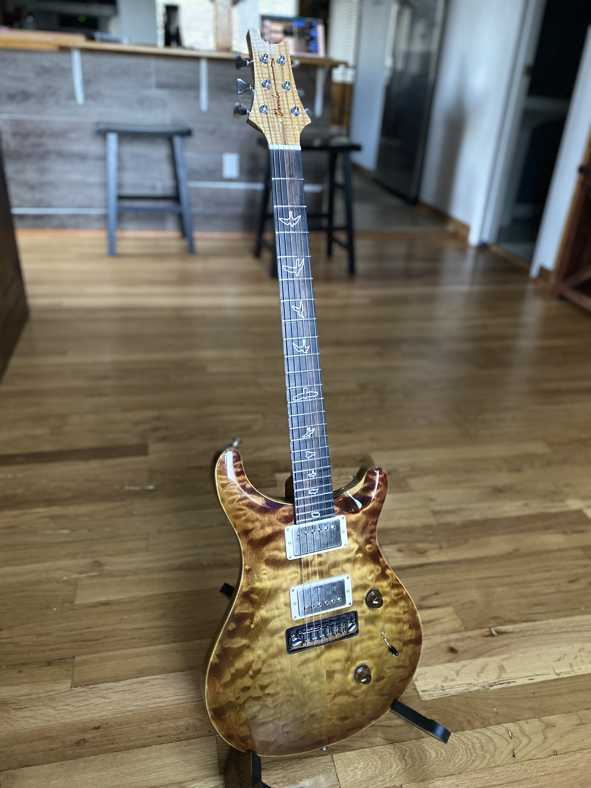
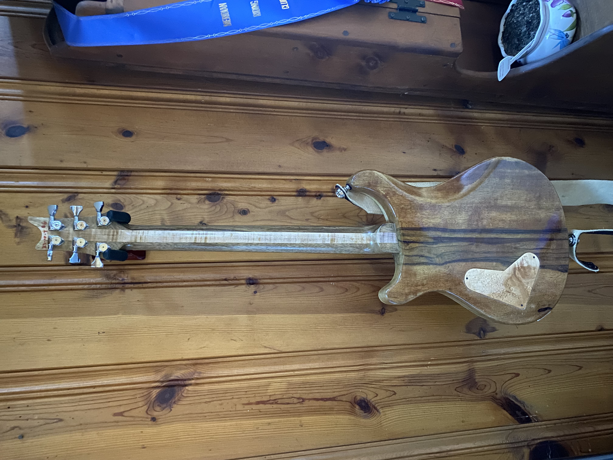
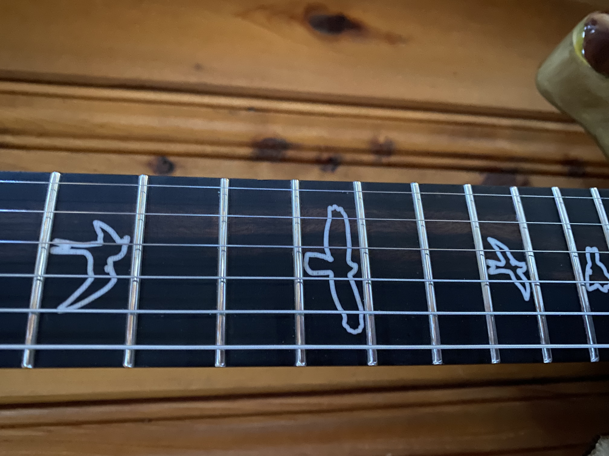
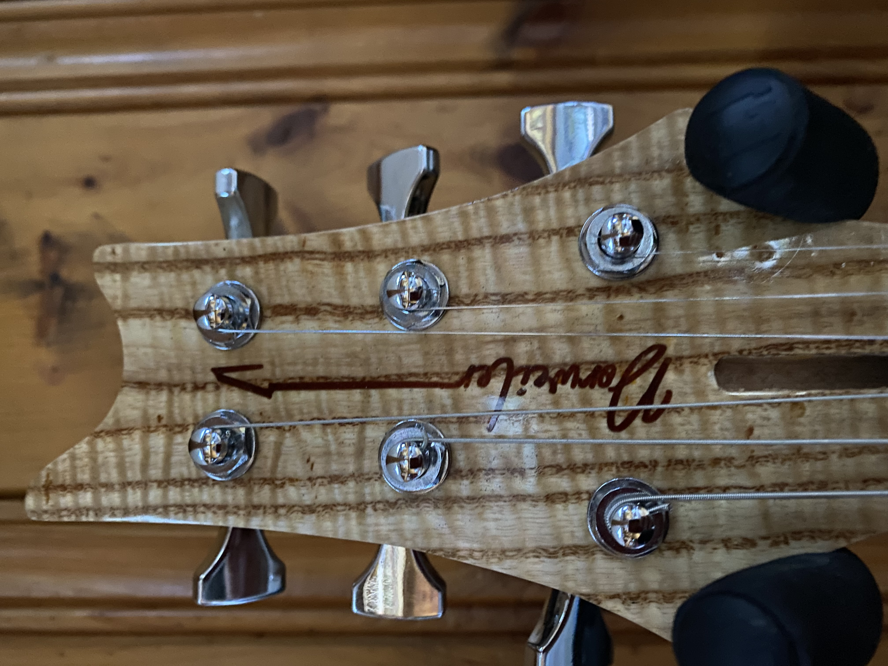

Dorweiler custom build
A PRS-inspired design featuring a spalted maple top over mahogany body with natural satin finish, ebony fretboard with bird inlays, and PRS-style tremolo.
I hand-picked this spalted maple specifically for its dramatic, organic patterns - they're the result of fungi creating dark lines through the wood as it ages. Every piece of spalted maple is completely unique; these exact patterns will never exist on another guitar. I kept the finish minimal (natural satin) to let the wood speak for itself, while the ebony fretboard with bird inlays adds a refined contrast to the wild, organic top.
This guitar has found its home. Interested in commissioning a similar Dorweiler build? Get in touch to discuss creating a one-of-a-kind instrument.
Commission Similar Build